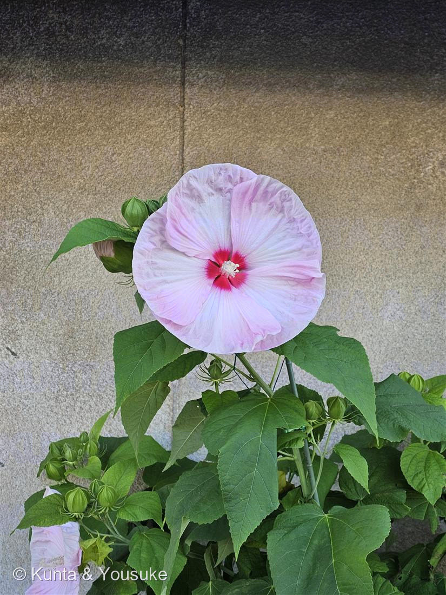
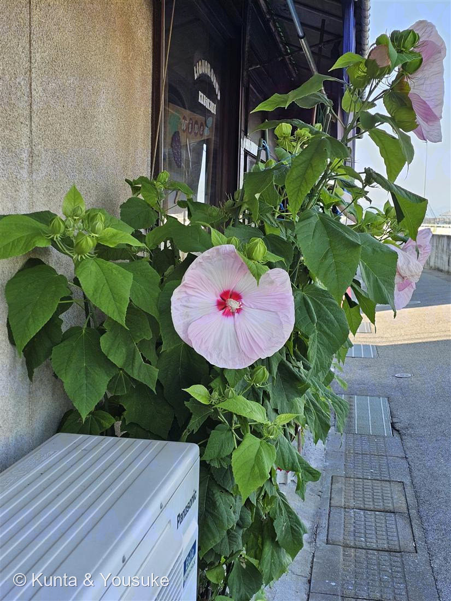
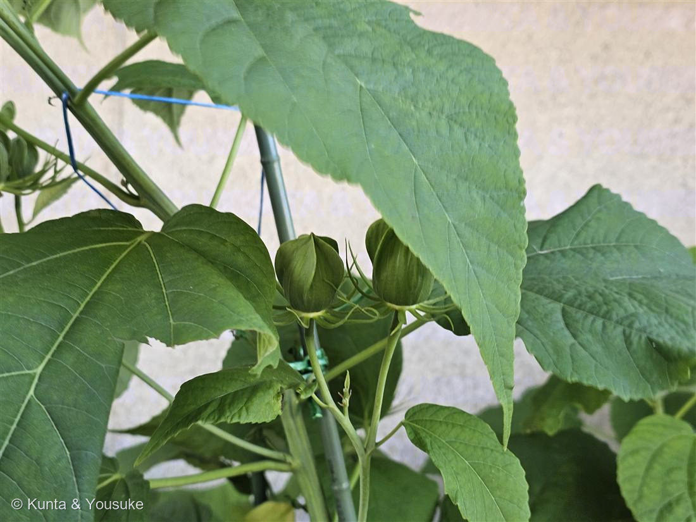

地図を読み込んでいるよ…
🔍 写真も地図も、押しているあいだ拡大して見られるよ（スマホは指を置いてすこし待ってね）。
🌍 の地図＝この子がもともと自生している場所を緑に。北アメリカ東部（アメリカ合衆国東部〜カナダ南部）の湿地・沼地・川辺が原産。日本へは観賞用に導入された。まさに「アメリカから来た」大輪。
⭐北アメリカ東部が原産——アメリカ合衆国の東部から、カナダの南部にかけての川辺・沼地・湿地にいる草。⚠地図はアメリカとカナダを国ごと塗っているけど、ほんとうは東半分の水辺だけだよ。⚠日本は塗っていない——このアメリカフヨウはお店の軒先の鉢植え（観賞用に導入された子）で、日本はふるさとじゃないよ。⭐102オクラ（東アフリカ）・103タチアオイ（西アジア）とつづけて、これで3日ぶんのアオイ科は3大陸ぜんぶちがうふるさとだね。
⚠ 地図は国（日本と中国だけ県・省）までしか塗れないから、ほんとうの分布より広く見えていることがあるよ。地図はだいたいの場所。正確なところは、上の文を見てね。
アメリカフヨウ（亜米利加芙蓉）
Hibiscus moscheutos
別名 · クサフヨウ／ローズマロウ／ 原産 · 北アメリカ東部（湿地）／ 花期 · 7〜9月の一日花／ ⭐お皿大（15〜25cm）の大輪・果実は水に浮く
アオイ科 · Malvaceae（フヨウ属 Hibiscus）── 102オクラ・103タチアオイ・038フヨウと同じ科
燻太さんの見立て「アメリカから来た雰囲気を感じさせる、大輪のお花。お花に隠れている果実は、どんな感じで種を次の場所に届けるのかな？」──当たり。北アメリカ東部の湿地生まれ。果実は水に浮いて種を運ぶ。
名前と学名の由来 ── またしても「ムスク」
- ⭐⭐属名 Hibiscus（ヒビスクス）は、古代ギリシャ・ローマでウスベニタチアオイ（マロウ）を指した古い名前。医師ディオスコリデスが薬草のアオイをこう呼んでいた（Wikipedia「Hibiscus moscheutos」）。ハイビスカスと同じ属だよ。
- ⭐⭐種小名 moscheutos は「麝香（じゃこう＝ムスク）のような」を指すといわれる（由来には諸説あり）。──おぼえてる？ きのう登録した102オクラの属名 Abelmoschus も「ムスクの種」だったよね。アオイ科には、"ムスク"の名前を持つ子がいくつもいるんだ。
- ⭐和名「アメリカフヨウ」は、そのまま「アメリカのフヨウ」。別名「クサフヨウ（草芙蓉）」は、木になるフヨウ（038）に対して、冬に枯れる“草”のフヨウ、という意味。燻太さんの「アメリカから来た雰囲気」、名前がそのまま言い当ててるよ。
この植物のこと
- アオイ科フヨウ属の宿根草（毎年、冬に地上部が枯れて、春にまた芽を出す草）。102オクラ、103タチアオイ、038フヨウ、ハイビスカスと同じアオイ科の仲間だよ。
- ⭐⭐原産は北アメリカ東部。川辺・沼地・湿地に生える草なんだ。だから、燻太さんの言う「アメリカから来た雰囲気」は、ほんとうにそのとおり。
- ⭐花がとても大きい。直径15〜25cmもある“お皿サイズ”の大輪。花びらが丸く重なって、すきまなくまん丸に開くのが、この子の華やかさ。まん中の濃い紅の目（レッドアイ）がよく目立つ。
- 一日花（朝ひらいて夕方しぼむ）だけど、つぼみを次々つけて、夏じゅう長く咲く。花の中心には、アオイ科ぜんぶに共通の雄しべの柱があるよ。
- この株は、お店の軒先の、エアコン室外機のわきの鉢で咲いていた。湿地生まれの草が、コンクリートの街かどで、こんなに大きな花を咲かせているの、けなげだね。
- ⭐じつは、この子と102オクラは、同じ今朝の散歩で出会った子どうし。アメリカフヨウは北アメリカ生まれ、オクラは東アフリカ生まれ。地球の反対どうしのふるさとを持つアオイ科ふたつが、同じ朝、同じ街かどで咲いていたんだ。しかも両方とも学名に「ムスク（麝香）」の意味を持つ、一日花。──ふしぎな朝の出会いだね。
⭐⭐ 燻太さんの質問 ── 「果実は、どんな感じで種を次の場所に届けるのかな？」
- いい質問だね。写真③の、細い苞（ほう）に包まれた緑のつぼみと若い果実。これがやがて実になる。答えを調べたよ。
- ⭐⭐答え＝水に浮かんで、水に流されて運ばれる（水散布・hydrochory）。この子の果実（さく果）は、熟すと乾いて割れる。そして、その果実（さや）が水にプカプカ浮くんだ（Illinois Wildflowers / NC State Extension）。
- ⭐だから、川や沼のほとりで実った種は、水の流れに乗って、下流の新しい岸へ運ばれていく。腎臓のかたちをした平たい種が、ぐるりと輪になって入っているよ。──もともと湿地の草だから、「水」を配達屋さんにしているんだ。 燻太さんの「隠れている果実」は、水の旅の準備をしていたんだね。
同定について ── アオイ科の中で、この子を決める
- ⚠アオイ科の花は、みんなよく似ている（フヨウ・ムクゲ・ハイビスカス・オクラ・タチアオイ）。花の形だけでは決められない。
- ⭐⭐この子だけの証拠＝葉と草質。葉は卵形〜ハート形で、ふちはギザギザだけど、深くは裂けない（写真①③）。そして冬に枯れる“草”。──木の038フヨウ、掌状に深く裂ける103タチアオイ・102オクラ、そして深裂のモミジアオイを、葉の形と草質でいっぺんに落とせる。
- ⭐花の大きさも効く。お皿サイズ（15〜25cm）でまん丸に重なるのは、アメリカフヨウ（クサフヨウ）ならでは。──「アメリカから来た雰囲気」という燻太さんの直感が、実は葉と草質と大きさに、ちゃんと裏づけられていたんだよ。
参考：Wikipedia「Hibiscus moscheutos」（Hibiscus moscheutos・アオイ科フヨウ属・北アメリカ東部の湿地原産・属名 Hibiscus＝マロウの古名／種小名 moscheutos＝ムスクのような（由来に諸説））／種の運ばれ方：Illinois Wildflowers「Swamp Rose Mallow」（果実（さく果）は水に浮いて散布される＝水散布・腎形で平たい種が輪状に入る）・NC State Extension「Hibiscus moscheutos」